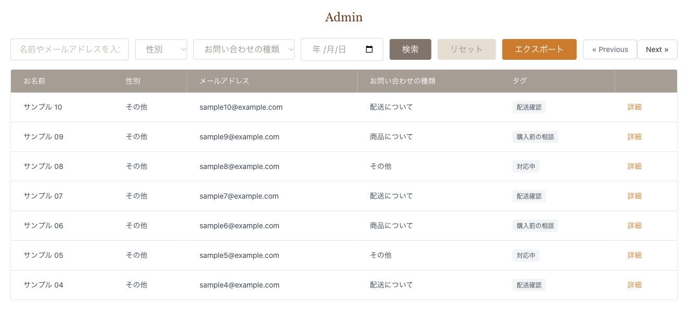
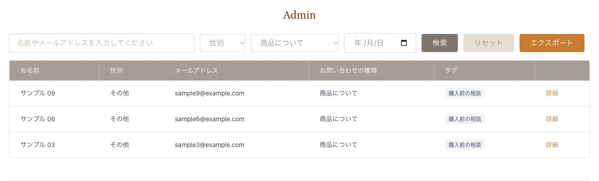
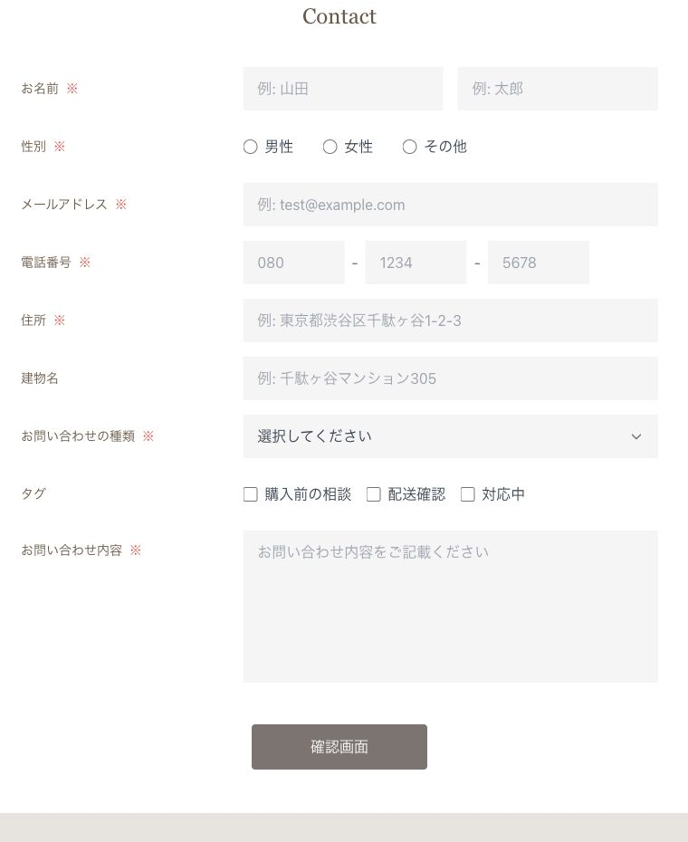

Laravel バックエンド開発
お問い合わせ管理アプリ
受付から検索・CSV出力まで
公開フォームで受け付けたお問い合わせを、管理者が検索・確認できるアプリです。提供されたBlade画面に対し、DB設計、入力検証、管理機能、APIとテストを実装しました。

- 制作形態
- COACHTECH 確認テスト（画面提供）
- 担当
- DB設計・Webルート・入力検証・管理機能・認証付きAPI・テスト。画面デザインは担当範囲に含みません。
- 期間・状態
- 2026年7〜10月（Gitの履歴に基づく）。
- 公開範囲
- コード・画面を公開／操作デモなし
ターゲット・ペルソナ
要件書と画面に基づく想定
- ターゲット
- 問い合わせを送るサイト利用者と、内容を確認・管理する担当者
- ペルソナ
- 複数の問い合わせから必要な内容を探し、検索結果をCSVで取り出したい管理担当者。
管理画面の検索とCSV
探した内容を、そのまま出力
名前・メール・性別・カテゴリー・日付で検索。ページを移動しても条件を保ち、同じ条件でCSVを出力します。

検索と出力の一貫性
検索条件を共通化
一覧表示とCSV出力で、Contactモデルの同じ検索処理を使っています。一覧は7件ずつ表示し、CSVは条件に一致する全件を新着順で出力します。
CSVには列名を付け、性別やカテゴリーはIDではなく名称で表示。Excelで扱う際の文字化けを抑えるため、UTF-8のBOMも付けています。
CSV出力の実装
公開フォーム
確認してから送信
必須項目や電話番号、カテゴリー・タグの存在を検証し、通過した内容を確認画面に表示します。「修正」で戻った際は、入力内容を保持します。
問い合わせとタグは中間テーブルで関連付けています。管理画面では、問い合わせ時に選ばれたタグを確認できます。
確認・保存処理を見る認証付きAPI
APIにもアクセス制御
一覧・詳細・登録・更新・削除のAPIを実装し、すべてSanctumのトークン認証で保護しています。管理者の公開登録は無効にし、利用するアカウントはシーダーで作成します。
APIから問い合わせとタグを登録・更新する処理は、トランザクションでまとめています。Resourceで返却形式を揃え、未認証時は401、不正な入力は422を返します。
APIの認証設定を見る実装を支えるテスト
正常系とエラーを確認
フォームの入力検証、検索・ページネーション、タグ管理、APIの認証とCRUDにテストを用意しています。トークン発行の回数制限や、失効したトークンの再利用も検証対象です。
掲載内容の確認（2026年11月11日）：既存テストのコードと、撮影用環境での検索・条件の引継ぎを確認。テストスイート全体は再実行していません。
トークン認証のテストを見る制作範囲と使用技術
制作概要
- 技術
- PHP / Laravel 10 / MySQL / Fortify / Sanctum / PHPUnit / Docker
学習プロジェクトであり、商用運用の実績ではありません。画面は既存コードを一時環境で起動して撮影しました。
実装とテストの詳細は、GitHubで確認できます。